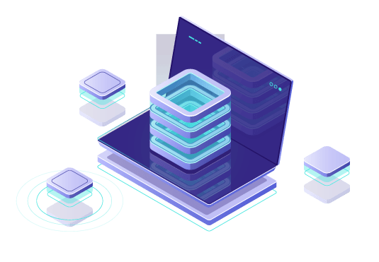

En el mundo digital actual, las aplicaciones web ya no se limitan a ser estáticas, donde los usuarios simplemente consumen información.
exploraremos qué son las aplicaciones dinámicas y en tiempo real, y cómo los Web Sockets están cambiando la forma en que interactuamos en línea.
¿Qué significa?
son aquellas que pueden actualizar y mostrar información a los usuarios de forma instantánea, sin necesidad de recargar la página. En contraste con las aplicaciones estáticas, donde los usuarios deben realizar una acción (como hacer clic en un enlace) para obtener información actualizada, las aplicaciones dinámicas y en tiempo real ofrecen una experiencia más interactiva y fluida.
El Papel Fundamental de Web Sockets
Web Sockets son un protocolo de comunicación que permite la comunicación bidireccional en tiempo real entre un servidor y un cliente a través de una única conexión. En contraste con el modelo de solicitud y respuesta tradicional de HTTP, donde el cliente debe solicitar información al servidor y el servidor responde, los Web Sockets permiten que el servidor envíe información al cliente en cualquier momento, y viceversa.
¿Qué ofrece?
- Comunicación en Tiempo Real
- Menos Consumo de Recursos
- Escalabilidad
- Amplio Soporte
- Integración con Herramientas de Construcción y Despliegue